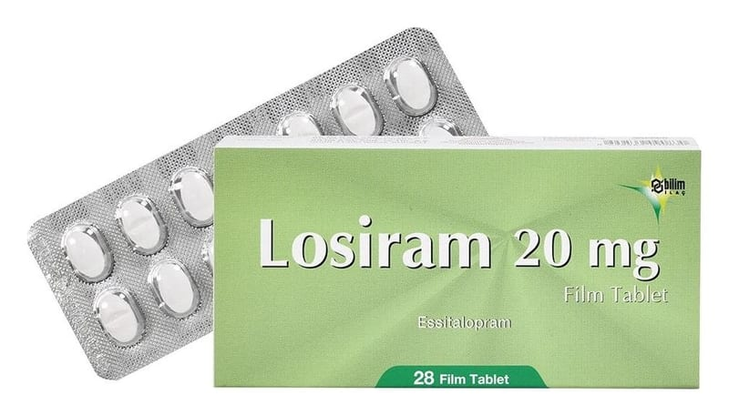

Losiram 20 mg Film Kaplı Tablet, 28 Adet

Ne için kullanılır
KT · Bölüm 1• LOSİRAM 20 mg film kaplı tabletlerin her biri 20 mg essitalopram içeren beyaz, bikonveks, oblong, bir yüzü çentikli film kaplı tabletlerdir. • LOSİRAM 28, 56 ve 84 tabletlik ambalajlarda piyasaya sunulmaktadır. • LOSİRAM essitalopram içerir. Bu ilaç, depresyon (majör depresif durumlar) ve agorafobili (açık alan korkusu) veya agorafobisiz panik bozukluğu, sosyal anksiyete (kaygı) bozukluğu ve yaygın anksiyete bozukluğu ve obsesif-kompulsif (saplantı-zorlantı) bozukluk gibi anksiyete bozukluklarında kullanılır. • Essitalopram, selektif serotonin geri alım inhibitörleri (SSRI’lar) olarak adlandırılan bir antidepresan grubuna dahildir. Bu ilaçlar beyindeki serotonin sistemini etkileyerek serotonin düzeylerini arttırırlar. Serotonin sistemindeki bozukluğun, depresyon ve benzeri hastalıkların gelişiminde önemli bir faktör olduğu kabul edilmektedir.
İyi hissetmeye başlamanız birkaç haftayı bulabilir. Durumunuzda iyileşme görmeniz biraz zaman alsa bile, LOSİRAM kullanmaya devam ediniz.
Sayfa 2 Eğer kendinizi daha iyi hissetmezseniz ya da daha kötü hissederseniz, bunu bir doktorla konuşmalısınız.